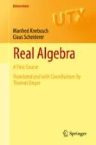
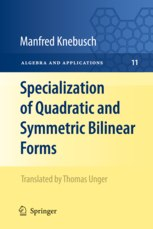

Current Research
- Real algebraic aspects of algebras with involution.
In preparation
- (with Vincent Astier) Knebusch trace formula for Azumaya algebras with involution.
Preprint
- (with Vincent Astier) Continuity of total signature maps for Azumaya algebras with involution. arXiv:2511.15448
Publications
- Signature maps from positive cones on algebras with involution
with Vincent Astier
Canadian Journal of Mathematics, published online, 2025
DOI: 10.4153/S0008414X25101806
Preprint version: arXiv:2505.22178
[This paper also rectifies a problem that affected some results in Adv. Math. 361 (2020), 106954, 1-48.] - Pfister's local-global principle for Azumaya algebras with involution
with Vincent Astier
Documenta Mathematica 30 (2025), no. 6, pp. 1325–1364
DOI: 10.4171/dm/1026
Preprint version: arXiv:2210.04851
[Annoying typo: In Remark 3.2, it should be "P ∈ X_F ∖ Nil[B,τ]".] - The life and work of David W. Lewis (1944-2021)
Irish Math. Soc. Bull. 82 (2022), 5-16
DOI: 10.33232/BIMS.0089.5.16 - Positive cones and gauges on algebras with involution
with Vincent Astier
International Mathematics Research Notices, Volume 2022, Issue 10 (2022), 7259-7303
DOI: 10.1093/imrn/rnaa337
Preprint version: arXiv:1806.05489 - Positive cones on algebras with involution
with Vincent Astier
Adv. Math. 361 (2020), 106954, 1-48
DOI: 10.1016/j.aim.2019.106954
Preprint version: arXiv:1609.06601 - Galois extensions, positive involutions and an application to unitary space-time coding
with Vincent Astier
Adv. Math. Commun. 13 (3) (2019), 513-516
DOI: 10.3934/amc.2019032
Preprint version: arXiv:1809.08954 - Positive cones and gauges on algebras with involution
with Vincent Astier
Oberwolfach Reports 15 (2) (2018), 1253-1255
DOI: 10.4171/OWR/2018/21
(preprint version) - Signatures of hermitian forms, positivity, and an answer to a question of Procesi and Schacher
with Vincent Astier
J. Algebra 508 (2018), 339-363
DOI: 10.1016/j.jalgebra.2018.05.004
Preprint version: arXiv:1511.06330 - Signatures, sums of hermitian squares and positive cones on algebras with involution
with Vincent Astier
Electron. Res. Announc. Math. Sci. 25 (2018), 16-26
DOI: 10.3934/era.2018.25.003
Preprint version: arXiv:1706.01264 - Weakly hyperbolic involutions
with Karim Johannes Becher
Expo. Math. 36 (2018), 78-97
DOI: 10.1016/j.exmath.2017.08.006
Preprint version: arXiv:1207.4658 - Stability index for algebras with involution
with Vincent Astier
Contemporary Mathematics 697 (2017), 41-50
DOI: 10.1090/conm/697/14045
Preprint version: arXiv:1406.5892 - Algebraic structures for capturing the provenance of SPARQL queries
with Floris Geerts, Grigoris Karvounarakis, Irini Fundulaki, Vassilis Christophides
Journal of the ACM, Vol. 63, No. 1, Article 7 (2016), 7:1-7:63
DOI: 10.1145/2810037 - Signatures of hermitian forms and "prime ideals" of Witt groups
with Vincent Astier
Adv. Math. 285 (2015), 497-514
DOI: 10.1016/j.aim.2015.07.035
Preprint version: arXiv:1303.3494 - Signatures of hermitian forms and the Knebusch Trace Formula
with Vincent Astier
Math. Annalen 358 (3-4) (2014), 925-947
DOI: 10.1007/s00208-013-0977-3
Preprint version (= final version plus erratum): arXiv:1003.0956 - Signatures of hermitian forms and applications
with Vincent Astier
Oberwolfach Reports 10 (2) (2013), 1853-1856
DOI: 10.4171/OWR/2013/31
(preprint version) - Space-time block codes from nonassociative division algebras
with Susanne Pumplün
Adv. Math. Commun. 5 (3) (2011), 449-471
DOI: 10.3934/amc.2011.5.449
Preprint version: arXiv:1006.2348 - Quadratic forms and space-time block codes from generalized quaternion and biquaternion algebras
with Nadya Markin
IEEE Trans. Inf. Theory 57 (9) (2011), 6148-6156
DOI: 10.1109/TIT.2011.2161909
Preprint version: arXiv:0807.0199
[Annoying typo: in equation (4), x should be replaced by j.] - The Procesi-Schacher conjecture and Hilbert’s 17th problem for algebras with involution
with Igor Klep
J. Algebra 324 (2010), 256-268
DOI: 10.1016/j.jalgebra.2010.03.022
Preprint version: arXiv:0810.5254 - The Procesi-Schacher conjecture and Hilbert’s 17th problem for algebras with involution
with Igor Klep
Oberwolfach Reports 6 (2) (2009), 1388-1390
DOI: 10.4171/OWR/2009/25
(preprint version) - A hermitian analogue of the Bröcker-Prestel theorem
with Vincent Astier
Indagationes Mathematicae (N.S.) 19 (3) (2008), 349-358
DOI: 10.1016/S0019-3577(09)00007-X -
Hermitian Morita Theory: a matrix
approach
with David W. Lewis
Irish Math. Soc. Bull. 62 (2008), 37-41.
Erratum (updated April 2018) - The Hasse principle for similarity of hermitian forms
with David W. Lewis and Jan Van Geel
J. Algebra 285 (2005), 196-212.
DOI: 10.1016/j.jalgebra.2004.12.002 - The hermitian level of composition algebras
with Susanne Pumplün
manuscripta mathematica 109 (2002), 511-525.
DOI: 10.1007/s00229-002-0323-7 - A local-global principle for algebras with involution and hermitian forms
with David W. Lewis
Math. Zeit. 244 (2003), 469-477.
DOI: 10.1007/s00209-003-0490-6,
Erratum - A weak Hasse principle for central simple
algebras with an involution
with David W. Lewis and Claus Scheiderer
Doc. Math. Extra Volume, Proc. Conf. Quadratic Forms and Related Topics, Baton
Rouge, La., 2001, 241-251 (2001) - A note on surrogate forms of central simple algebras
Math. Proc. R. Ir. Acad., 101A(2) (2001), 125-135. - Clifford algebra periodicity for central simple algebras with an involution
Comm. Algebra, 29(3) (2001), 1141-1152.
DOI: 10.1081/AGB-100001672 - Genetic Algorithms: a survey of some mathematical
models
--- Part I
Irish Math. Soc. Bull. 41 (1998), 57-71.
Not Peer Reviewed
- Signatures, sums of hermitian squares and positive cones on algebras with involution
with Vincent Astier
Séminaire de Structures Algébriques Ordonnées 2015-2016, 91 (2017) - Signatures of hermitian forms, prime ideals and morphisms
with Vincent Astier
Séminaire de Structures Algébriques Ordonnées 2012-2013, 89 (2014)
Books
- Real Algebra: A First Course by Manfred Knebusch and Claus Scheiderer
Translated and with contributions by Thomas Unger
Universitext, Springer Nature, 2022
DOI: 10.1007/978-3-031-09800-0
(Revised and updated English translation of Einführung in die reelle Algebra.)

- Specialization of Quadratic and Symmetric Bilinear Forms by Manfred Knebusch
Translated by Thomas Unger
Algebra and Applications, Vol. 11, Springer, 2010
DOI: 10.1007/978-1-84882-242-9
The original German version Spezialisierung von quadratischen und symmetrisch bilinearen Formen can be downloaded here: (link).

Last updated: 28 December 2025